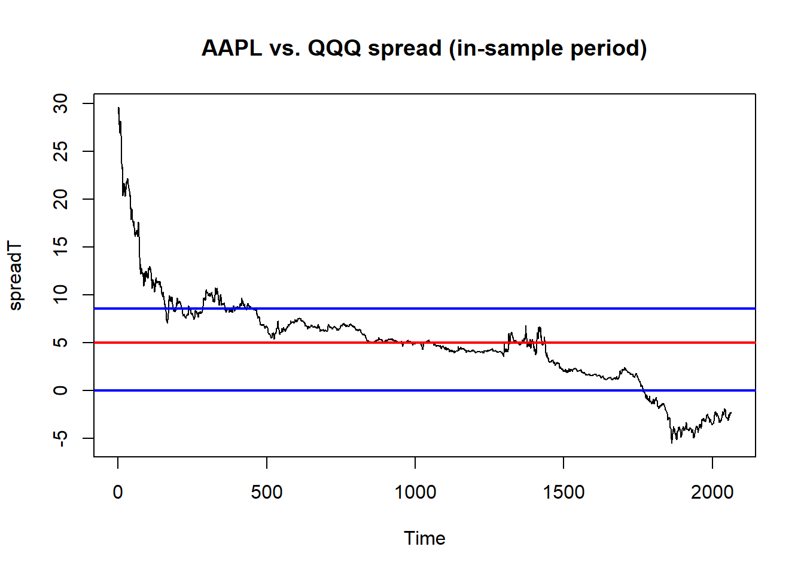
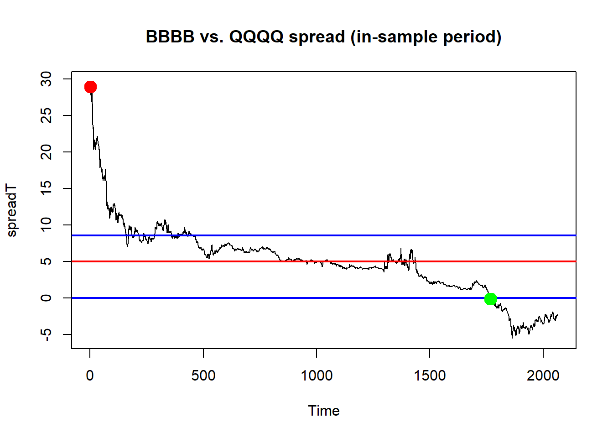

Pairs trading, hedge ratio we knew them, no need to repeat anything. Again I adopted codes from link above. You may want to read it from there. For pairs trading we need an upper bond and a lower bond to mark entry points for placing orders, the bonds can be computed as \(mean \pm sdtv\). In this material we have optimized bonds are \((-0.02238346, 8.56827139)\). Let’s make a plot with the optimized bonds Figure 4.1.
BB<-mydata$X601857.CloseQQ<-mydata$X601318.Close#define training setrangeT<-mydata[,1]BB<-as.ts(BB)QQ<-as.ts(QQ)#compute price differences on in-sample datapdBB<-diff(BB)[-1]pdQQ<-diff(QQ)[-1]#build the modelmodel<-lm(pdBB~pdQQ-1)#extract the hedge ratiohr<-as.numeric(model$coefficients[1])#spread price (in-sample)spreadT<-BB-hr*QQ#compute statistics of the spreadmeanT<-as.numeric(mean(spreadT,na.rm=TRUE))sdT<-as.numeric(sd(spreadT,na.rm=TRUE))upperThr<-8.56827139lowerThr<--0.02238346
Code
#visualize the in-sample spread + statsplot(spreadT, main ="AAPL vs. QQQ spread (in-sample period)")abline(h =meanT, col ="red", lwd =2)abline(h =upperThr, col ="blue", lwd=2)abline(h =lowerThr, col ="blue", lwd=2)

Figure 4.1: Plot upper and lower thresholds with residual series.
The code below shows to buy and sell with the thresholds and the residual series Figure 4.2. The logic is nice and clear, no need to say much about it.
Code
indSell<-which(spreadT>=upperThr)indBuy<-which(spreadT<=lowerThr)spreadL<-length(spreadT)pricesB<-c(rep(NA,spreadL))pricesS<-c(rep(NA,spreadL))sp<-as.numeric(spreadT)tradeQty<-100totalP<-0holding.pos<-length(spreadT)for(iin1:spreadL){spTemp<-sp[i]if(spTemp<lowerThr){if(totalP<=0){#have some to buytotalP<-totalP+tradeQtypricesB[i]<-spTemp}}elseif(spTemp>upperThr){if(totalP>=0){#have some to selltotalP<-totalP-tradeQtypricesS[i]<-spTemp}}holding.pos[i]<-totalP}plot(spreadT, main ="BBBB vs. QQQQ spread (in-sample period)")abline(h =meanT, col ="red", lwd =2)abline(h =upperThr, col ="blue", lwd =2)abline(h =lowerThr, col ="blue", lwd =2)points(as.ts(pricesB,index(spreadT)), col="green", cex=1.9, pch=19)#buypoints(as.ts(pricesS,index(spreadT)), col="red", cex=1.9, pch=19)#sellspReturns=diff(sp)/tail(sp,-1)#laggedtrading.sign=sign(tail(holding.pos,-1))#laggedtrading.return=trading.sign*spReturnssum(trading.return)
[1] 6.563768
Code
SharpeRatio(as.ts(trading.return), Rf=.035/252, FUN="StdDev")#252 tradings a year
[,1]
StdDev Sharpe (Rf=0%, p=95%): 0.04465002
Code
#cbind(tail(holding.pos,-1),spReturns )

Figure 4.2: Two order entry points red and green
After we can place orders, we can compute return series of the orders, also use Sharpe ratio to evaluate the return series. The upper lower thresholds which produce the best Sharpe ratio for our residuals series are the best thresholds. Optimization method we using here is Bayesian optimization. The end result is what we used for plotting.
Code
opt_thresholds<-function(lower, upper){lowerThr=lowerupperThr=upperspreadL<-length(spreadT)sp<-as.numeric(spreadT)tradeQty<-100totalP<-0holding.pos<-length(spreadT)for(iin1:spreadL){spTemp<-sp[i]if(spTemp<lowerThr){if(totalP<=0){#have some to buytotalP<-totalP+tradeQty}}elseif(spTemp>upperThr){if(totalP>=0){#have some to selltotalP<-totalP-tradeQty}}holding.pos[i]<-totalP}spReturns=diff(sp)/tail(sp,-1)#laggedtrading.sign=sign(tail(holding.pos,-1))#laggedtrading.return=trading.sign*spReturnssr=SharpeRatio(as.ts(trading.return), Rf=.035/252, FUN="StdDev")#252 tradings a yearreturn(list(Score =as.numeric(sr[,1])))# returns a score list}# Bayesian Optimizationoptimizer<-BayesianOptimization( FUN =opt_thresholds, bounds =list(lower =c(-2, 0), upper =c(.01, 19)), init_points =10, n_iter =10, acq ="ucb", verbose =TRUE)
---title: "Bayesian Optimization Pairs Trading"---https://zorro-project.com/manual/en/Lecture%204.htmPairs trading, hedge ratio we knew them, no need to repeat anything. Again I adopted codes from link above. You may want to read it from there. For pairs trading we need an upper bond and a lower bond to mark entry points for placing orders, the bonds can be computed as $mean \pm sdtv$. In this material we have optimized bonds are $(-0.02238346, 8.56827139)$. Let's make a plot with the optimized bonds @fig-pd1.```{r}#| warning: falserequire(quantmod)require(PerformanceAnalytics)require(rBayesianOptimization)rm(list=ls(all=TRUE))set.seed(4587)setwd("C:\\tuDrive2026\\Bayesian-Financial-Portfolio-Analysis-in-R\\")BBBB<-read.csv("BBBB.csv")QQQQ<-read.csv("QQQQ.csv")mydata<-merge(BBBB,QQQQ,by="Index")mydata[1:6,] BB <- mydata$X601857.Close QQ <- mydata$X601318.Close#define training set rangeT <-mydata[,1] BB <-as.ts(BB) QQ <-as.ts(QQ)#compute price differences on in-sample data pdBB <-diff(BB)[-1] pdQQ <-diff(QQ)[-1]#build the model model <-lm(pdBB ~ pdQQ -1)#extract the hedge ratio hr <-as.numeric(model$coefficients[1])#spread price (in-sample) spreadT <- BB - hr * QQ#compute statistics of the spread meanT <-as.numeric(mean(spreadT,na.rm=TRUE)) sdT <-as.numeric(sd(spreadT,na.rm=TRUE)) upperThr <-8.56827139 lowerThr <--0.02238346``````{r}#| label: fig-pd1#| fig-cap: "Plot upper and lower thresholds with residual series."#visualize the in-sample spread + statsplot(spreadT, main ="AAPL vs. QQQ spread (in-sample period)")abline(h = meanT, col ="red", lwd =2)abline(h = upperThr, col ="blue", lwd=2)abline(h = lowerThr, col ="blue", lwd=2)```The code below shows to buy and sell with the thresholds and the residual series @fig-pd2. The logic is nice and clear, no need to say much about it.```{r}#| label: fig-pd2#| fig-cap: "Two order entry points red and green"indSell <-which(spreadT >= upperThr)indBuy <-which(spreadT <= lowerThr) spreadL <-length(spreadT) pricesB <-c(rep(NA,spreadL)) pricesS <-c(rep(NA,spreadL)) sp <-as.numeric(spreadT) tradeQty <-100 totalP <-0 holding.pos<-length(spreadT)for(i in1:spreadL) { spTemp <- sp[i]if(spTemp < lowerThr) {if(totalP <=0){ #have some to buy totalP <- totalP + tradeQty pricesB[i] <- spTemp } } elseif(spTemp > upperThr) {if(totalP >=0){ #have some to sell totalP <- totalP - tradeQty pricesS[i] <- spTemp } } holding.pos[i]<-totalP }plot(spreadT, main ="BBBB vs. QQQQ spread (in-sample period)")abline(h = meanT, col ="red", lwd =2)abline(h = upperThr, col ="blue", lwd =2)abline(h = lowerThr, col ="blue", lwd =2)points(as.ts(pricesB,index(spreadT)), col="green", cex=1.9, pch=19)#buypoints(as.ts(pricesS,index(spreadT)), col="red", cex=1.9, pch=19)#sellspReturns =diff(sp)/tail(sp,-1)#laggedtrading.sign=sign(tail(holding.pos,-1))#laggedtrading.return=trading.sign*spReturns sum(trading.return)SharpeRatio(as.ts(trading.return), Rf=.035/252, FUN="StdDev") #252 tradings a year#cbind(tail(holding.pos,-1),spReturns )```After we can place orders, we can compute return series of the orders, also use Sharpe ratio to evaluate the return series. The upper lower thresholds which produce the best Sharpe ratio for our residuals series are the best thresholds. Optimization method we using here is Bayesian optimization. The end result is what we used for plotting. ```{r}opt_thresholds <-function(lower, upper) { lowerThr=lower upperThr=upper spreadL <-length(spreadT) sp <-as.numeric(spreadT) tradeQty <-100 totalP <-0 holding.pos<-length(spreadT)for(i in1:spreadL) { spTemp <- sp[i]if(spTemp < lowerThr) {if(totalP <=0){ #have some to buy totalP <- totalP + tradeQty } } elseif(spTemp > upperThr) {if(totalP >=0){ #have some to sell totalP <- totalP - tradeQty } } holding.pos[i]<-totalP }spReturns =diff(sp)/tail(sp,-1)#laggedtrading.sign=sign(tail(holding.pos,-1))#laggedtrading.return=trading.sign*spReturns sr=SharpeRatio(as.ts(trading.return), Rf=.035/252, FUN="StdDev") #252 tradings a yearreturn(list(Score =as.numeric(sr[,1])))# returns a score list}# Bayesian Optimizationoptimizer <-BayesianOptimization(FUN = opt_thresholds,bounds =list(lower =c(-2, 0), upper =c(.01, 19)),init_points =10,n_iter =10,acq ="ucb",verbose =TRUE)cat("Optimal thresholds:\n")print(optimizer$Best_Par)```